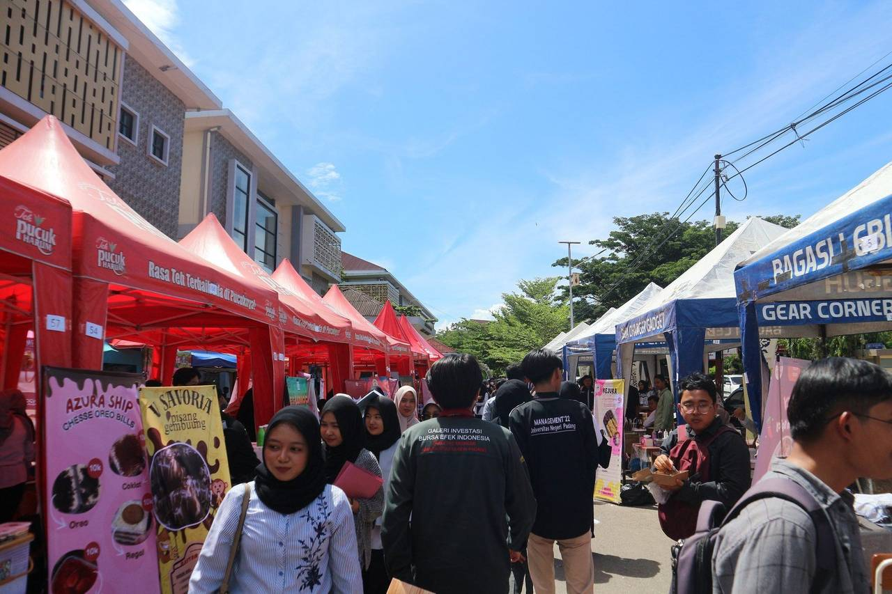
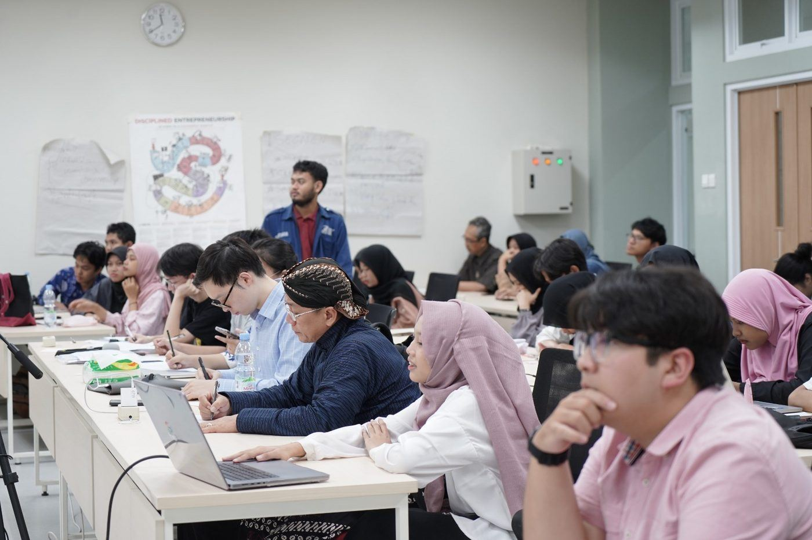
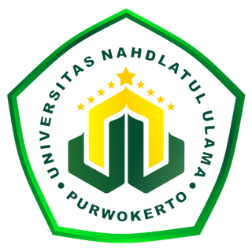
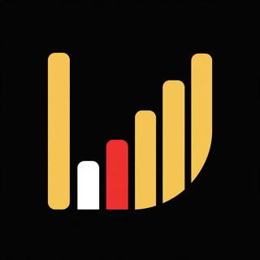
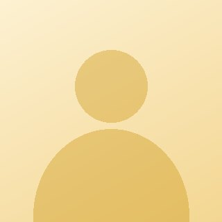
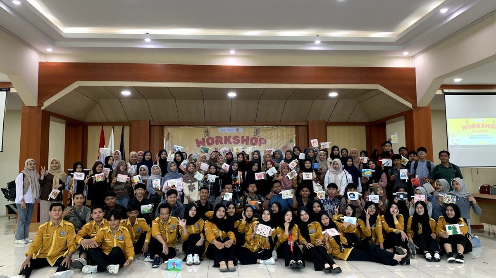
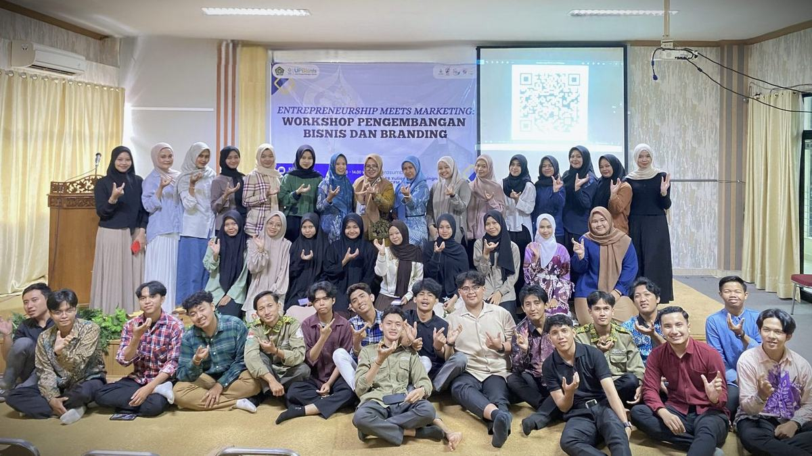

Workshop & Pelatihan
Kelas praktis seputar ide bisnis, branding, pemasaran digital, sampai pengelolaan keuangan usaha — dibawakan praktisi dan alumni yang sudah terjun langsung.
Rutin
UKM Kewirausahaan adalah wadah mahasiswa Universitas Nahdlatul Ulama Purwokerto yang berjiwa entrepreneur — belajar bisnis lewat pelatihan, praktik nyata, dan jaringan yang luas.


UKM Kewirausahaan UNU Purwokerto mewadahi mahasiswa dari semua program studi yang ingin belajar berbisnis sejak di bangku kuliah. Di sini, teori tidak berhenti di kelas: anggota dilatih, didampingi mentor, lalu langsung praktik mengelola usaha sungguhan.
Periode 2026/2027 dijalankan oleh Kabinet Akselerasi dengan semangat “Bergerak Cepat, Bertumbuh Hebat” — bergerak lincah menangkap peluang, dan bertumbuh bersama sebagai pengusaha muda.
Workshop & bootcamp bisnis rutin bersama praktisi.
Unit usaha nyata dikelola anggota lewat Danara.
Jejaring dengan UKM lain, kampus mitra, dan pelaku usaha.
Kaderisasi kepemimpinan lewat kepanitiaan & proyek nyata.
Program kami dirancang berjenjang — dari kelas dasar sampai mengelola unit usaha dan memimpin event besar.
Kelas praktis seputar ide bisnis, branding, pemasaran digital, sampai pengelolaan keuangan usaha — dibawakan praktisi dan alumni yang sudah terjun langsung.
RutinProgram intensif untuk mematangkan ide menjadi rencana bisnis yang siap dieksekusi, lengkap dengan sesi mentoring dan presentasi di hadapan panel.
IntensifPanggung jualan sesungguhnya: anggota memasarkan produknya di bazar kampus dan expo kewirausahaan, berhadapan langsung dengan pembeli dan umpan balik pasar.
Praktik JualanProgram kebersamaan tahunan untuk mempererat solidaritas antaranggota lintas angkatan — karena bisnis yang kuat dibangun oleh tim yang solid.
TahunanKunjungan dan bertukar pengalaman dengan UKM kewirausahaan serta komunitas bisnis di kampus lain — pulang membawa inspirasi dan relasi baru.
RelasiAnggota terjun langsung mengelola unit bisnis UKM lewat Danara — dari produksi, pemasaran, sampai membaca laporan dan mengambil keputusan usaha.
Unit Bisnis
Danara adalah entitas bisnis semi-otonom di dalam UKM Kewirausahaan. Di sinilah anggota berhenti sekadar berteori — mereka mengelola usaha betulan, melayani pelanggan betulan, dan bertanggung jawab atas hasil betulan.

ME Mario ElyansyahDirektur Danara — memimpin arah bisnis & target tiap unit usahaTiap unit bisnis punya target dan arah pertumbuhan yang jelas, dipantau berkala.
Tempat anggota menguji produk, strategi harga, dan cara promosi di pasar nyata.
Danara melayani kerja sama dengan pihak kampus maupun eksternal. Hubungi kami untuk katalog & proposal.
Tim di balik layar yang menggerakkan UKM Kewirausahaan periode ini — bergerak cepat, bertumbuh hebat.
Membina dan mengarahkan UKM Kewirausahaan agar programnya sejalan dengan visi universitas.
Pimpinan Unit Kegiatan Mahasiswa Kewirausahaan.
Dari ruang kelas sampai stan bazar — beginilah keseharian mahasiswa yang serius belajar jadi pengusaha. Foto-foto berikut adalah ilustrasi suasana kegiatan kewirausahaan mahasiswa; klik untuk memperbesar.


Pendaftaran anggota baru UKM Kewirausahaan dibuka satu kali dalam setahun. Di luar masa rekrutmen, kamu bisa masuk waiting list: begitu pendaftaran dibuka, kamu yang pertama kami hubungi.
Klik tombol di bawah dan kirim pesan WhatsApp ke admin — nama dan nomor aktifmu langsung tercatat di daftar minat anggota.
Menjelang masa pendaftaran tahunan, admin akan menghubungimu lebih dulu sebelum pengumuman dibuka untuk umum.
Ikuti rangkaian seleksi dan pembekalan, lalu resmi dilantik menjadi keluarga besar UKM Kewirausahaan.
Satu kali dalam setahun, mengikuti kalender kemahasiswaan UNU Purwokerto. Pengumuman resminya selalu dibagikan lewat Instagram @kewirausahaan.unu — dan anggota waiting list dihubungi lebih dulu oleh admin.
Seluruh mahasiswa aktif Universitas Nahdlatul Ulama Purwokerto dari semua program studi. UKM ini terbuka untuk siapa pun yang punya minat belajar bisnis, bukan hanya mahasiswa jurusan ekonomi.
Tidak harus. Sebagian besar anggota justru mulai dari nol di sini. Yang penting kemauan belajar — ide dan praktik bisnisnya akan dibangun bersama lewat pelatihan, mentoring, dan unit usaha Danara.
Untuk sponsorship, kemitraan, maupun pemesanan katalog Danara, silakan hubungi narahubung kami di WhatsApp 0857-1341-9939 (Divisi Eksternal) atau email ukmkewirausahaan.unupwt@gmail.com. Proposal kerja sama akan kami sambut dengan senang hati.
Tim kami terbuka untuk diskusi — dari calon anggota, sponsor, sampai mitra usaha untuk Danara. Sapa kami, kami balas dengan senang hati.
 AS
AS LK
LK SD
SD DR
DR FI
FI AH
AH LS
LS ME
ME SA
SA